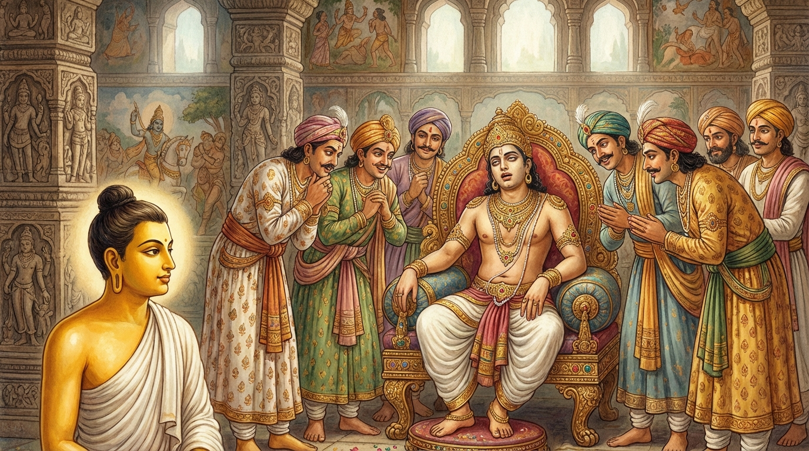

7. පාදඤ්ජලී ජාතකය (247)
“අද්ධා පාදඤ්ජලී සබ්බෙ” යන මේ දේශනාව බුදුරජාණන් වහන්සේ ජේතවන විහාරයේ වැඩවාසය කරන සමයෙහි ලාළුදායි තෙරුන් අරබයා වදාළ සේක. එක් දිනක් අග්රශ්රාවකයන් වහන්සේලා දෙනම ප්රශ්නයක් විනිශ්චය කරන සේක (ධර්ම සාකච්ඡා කරති). ධර්ම ප්රශ්න විනිශ්චය කරන අයුරු අසමින් සිටි භික්ෂූහු තෙරුන් වහන්සේලාට ප්රශංසා කළහ. පිරිස අතර හිඳගෙන සිටි ලාළුදායි තෙර “මේ දෙදෙනා වහන්සේ අප හා සමානයි, මොවුන් කුමක් දනිත්දැයි” සිතා තොල් පෙරළුවේය. එය දැක අගසව් දෙනම හුනස්නෙන් නැගිට වැඩියහ. පිරිස විසිරී ගියේය. දම්සභාවෙහිදී භික්ෂූහු කතාබහක් ඇති කරමින්, “ඇවැත්නි! ලාළුදායි තෙර අගසව් දෙනමට නිගරු කොට තොල් පෙරළුවේය” යැයි කීහ. බුදුරජාණන් වහන්සේ ඒ අසා, “මහණෙනි, දැන් පමණක් නොව පෙරත් ලාළුදායි තොල් පෙරළීම හැර ඊට වැඩි යමක් නොදත්තේ ය” යි වදාරා අතීත කථාව ගෙනහැර දැක්වූ සේක.
යටගිය දවස බරණැස් නුවර බ්රහ්මදත්ත රජු රාජ්යය කරන කල්හි බෝසතාණන් වහන්සේ රජුගේ අර්ථයෙන් හා ධර්මයෙන් අනුශාසනා කරන ඇමතියා විය. රජතුමාට බොළඳ වූ, මඳ උත්සාහ ඇති (අලස) ‘පාදඤ්ජලී’ නම් පුතෙක් විය. පසුකලෙක පියරජතුමා කළුරිය කළේය. ඇමතිවරු රජුගේ අවමඟුල් කටයුතු නිමවා “කවරෙකු රාජාභිෂේක කරවන්නෙම්දැයි” සාකච්ඡා කරමින්, “රාජකුමාර පාදඤ්ජලී රජ කරවමු” යි කීවාහුය. බෝසතාණන් වහන්සේ වනාහි “මේ කුමාරයා බොළඳය, මඳ උත්සාහ ඇත්තේය. එනිසා ඔහු පරීක්ෂා කර බලා පසුව අභිෂේක කරන්නෙමු” යි කීහ. ඇමතිවරු විනිශ්චයක් සූදානම් කොට කුමාරයා ළඟ හිඳුවා නඩුවක් විනිශ්චය කරමින් එය නිසි ලෙස (සාධාරණව) විනිශ්චය නොකළහ. ඔවුහු වැරදිකරු නිවැරදිකරු කොට (අයිතිකරුවා අයිතිකරුවා නොවන බවට පත් කොට), “කුමාරය, කෙසේද? අපි නඩුව මනාව විසඳුවෙමු දැයි” විචාළහ. කුමාරයා තොල් පෙරළුවේය. බෝසතාණන් වහන්සේ “කුමාරයා ඒකාන්තයෙන්ම පණ්ඩිතයෙකැයි සිතමි. වැරදි විනිශ්චයක් දුන් බව ඔහු විසින් දැනගන්නට ඇතැයි” සිතමින් මෙම පළමු ගාථාව කීහ.

“පාදඤ්ජලී කුමාර තෙමේ ඒකාන්තයෙන් ම අප හැමට වඩා ප්රඥාවෙන් බබළයි; එසේ හෙයින් හෙතෙම තොල් පෙරළයි. ඒකාන්තයෙන් ම මොහු මත්තෙහි (වෙනත් යමක්) දකියි.”
යනුවෙන් පළමු ගාථාව ප්රකාශ කළහ.
එහි අර්ථය මෙසේය: ඒකාන්තයෙන් පාදඤ්ජලී කුමාරයා අප හැමට වඩා ප්රඥාවෙන් බබළයි. එසේ හෙයින් හෙතෙම තොල් පෙරළයි. ඒකාන්තයෙන් ම හෙතෙම ඊට වඩා වෙනත් කරුණක් දකින බව පෙනේ.
ඔවුහු තවත් දවසක විනිශ්චයක් සූදානම් කොට වෙනත් නඩුවක් නිවැරදිව විනිශ්චය කර, “දේවයිනි, කෙසේද? නඩුව මනාව විසඳන ලද දැයි” විචාළාහුය. කුමාරයා නැවතද එසේම තොල් පෙරළුවේය. ඉක්බිති ඔහුගේ අඳබාල බව (මෝඩකම) දැන බෝසතාණන් වහන්සේ දෙවන ගාථාව පැවසූහ.
“මේ පාදඤ්ජලී කුමාරයා ධර්මය හෝ අධර්මය නොදනී; අර්ථය හෝ අනර්ථය ද නොදනී. තොල් පෙරළීම හැර මොහු අන් කිසිවක් නොදනී.”
යනුවෙන් දෙවන ගාථාව දේශනා කළහ.
ඇමතිවරු පාදඤ්ජලී කුමාරයාගේ බොළඳ බව දැන බෝසතාණන් වහන්සේව රාජ්යයෙහි අභිෂේක කළහ.
බුදුරජාණන් වහන්සේ මේ ධර්ම දේශනාව ගෙනහැර දක්වා ජාතකය ගළපා නිමවා වදාළ සේක. “එකල පාදඤ්ජලී කුමාරයා වූයේ මේ ලාළුදායී ය. නුවණ ඇති ඇමතියා වනාහි මම ම වූයෙමි” යි වදාළ සේක.
සත්වන පාදඤ්ජලී ජාතක වර්ණනාව නිමාවිය.